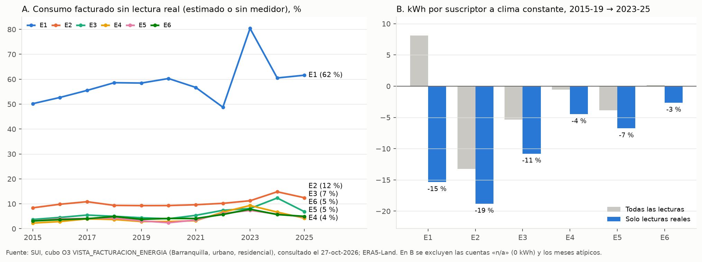
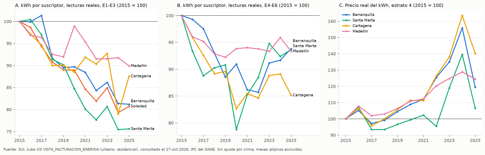

Consumo del SUI por tipo de lectura#
El reporte consolidado del SUI (ele_com_096) que usa el repositorio no separa el consumo medido del estimado. Para resolver el pendiente del estrato 1 (Datos sospechosos y pendientes) se consultó el cubo de facturación de la herramienta O3 del SUI, que sí trae el tipo de lectura (Superintendencia de Servicios Públicos Domiciliarios, 2026). Este capítulo resume lo que muestra esa consulta para Barranquilla y otras cuatro ciudades, y lo que cambia en la propuesta.
Datos#
La consulta se hizo el 27 de octubre de 2026 en la vista SUI_COMERCIAL_ENERGIA/VISTA_FACTURACION_ENERGIA con estos filtros:
ubicación urbana, uso residencial y los seis estratos residenciales;
todas las empresas y todos los tipos de usuario, sumados;
enero de 2015 a diciembre de 2025, por mes;
tipo de lectura: real, estimada, sin medidor y «n/a».
Las medidas son el número de suscriptores, el consumo (kWh), la facturación por consumo y la facturación total. La misma consulta se repitió para Soledad, Santa Marta, Cartagena y Medellín. Los archivos son tablas/SUI_O3_Barranquilla_residencial_lectura_2015_2025.csv y tablas/SUI_O3_5municipios_residencial_lectura_2015_2025.csv, y los scripts están en scripts/sui_o3/.
Sumadas sobre el tipo de lectura, las cifras de O3 coinciden exactamente, mes a mes y estrato por estrato, con SUI_Barranquilla_urbano_residencial_2015_2026.csv. El empalme de las dos descargas del consolidado (2015–2018 y 2019–2026) no introduce diferencias.
Cuentas sin consumo#
Desde junio de 2021, todos los meses incluyen entre 4 % y 12 % de suscriptores con tipo de lectura «n/a» y 0 kWh. En septiembre y octubre de 2024 y en agosto de 2025 casi todas las cuentas aparecen así, que son los meses sin consumo del consolidado. Estas cuentas explican el aumento aparente de suscriptores de junio de 2021 a julio de 2022 y bajan cerca de 5 % el consumo por suscriptor del consolidado desde 2021. En adelante, el consumo por suscriptor se calcula sin ellas.
El estrato 1 no está medido#
Periodo |
E1 |
E2 |
E3 |
E4 |
E5 |
E6 |
|---|---|---|---|---|---|---|
2015–2019 |
55 |
10 |
5 |
3 |
4 |
4 |
2023–2025 |
67 |
13 |
9 |
7 |
6 |
6 |
En el estrato 1, entre 50 % y 80 % del consumo facturado de cada año no viene de un medidor leído. En 2025, 22 % de sus suscriptores no tiene medidor y 16 % tiene lectura estimada. A los usuarios sin medidor se les facturaron en 2023–2025 unos 671 kWh/mes, frente a 211 kWh/mes de los hogares con lectura real. Las lecturas estimadas del estrato 1 varían mucho de un año a otro (de 210 a más de 3.000 kWh/mes en promedio anual).
Con solo lecturas reales, el estrato 1 consume lo mismo que el 2 y menos que el 3: 209, 205 y 253 kWh/mes en 2023–2025. La cifra coincide con la de CEELA, que también usó lecturas reales (229 kWh/mes en 2021–2024, Tabla 22), y con la baja tenencia de A/C del estrato. El exceso del estrato 1 en el consolidado es, por tanto, un efecto de la facturación sin medición.
Tendencia con lecturas reales#


Figura 22 (A) Parte del consumo facturado sin lectura real por estrato. (B) Cambio del consumo por suscriptor a clima constante, de 2015–2019 a 2023–2025, con todas las lecturas (sin cuentas «n/a») y con solo lecturas reales.#
El cambio se estimó por estrato con ln(kWh por suscriptor) = efecto de año + efecto de mes + β · índice de calor del mes anterior (ERA5-Land), sin las cuentas «n/a» y sin los meses que se alejan más de 25–30 % de la mediana móvil de siete meses.
E1 |
E2 |
E3 |
E4 |
E5 |
E6 |
|
|---|---|---|---|---|---|---|
kWh/mes, 2015–2019 |
248 |
249 |
285 |
358 |
445 |
738 |
kWh/mes, 2023–2025 |
209 |
205 |
253 |
343 |
418 |
729 |
Cambio a clima constante, % |
−15 |
−19 |
−11 |
−4 |
−7 |
−3 |
Respuesta al índice de calor, % por °C |
0,0 |
2,0 |
1,6 |
2,7 |
3,2 |
3,6 |
Alza ago.–sep. frente a feb.–mar., 2015–2025, % |
16 |
19 |
27 |
31 |
31 |
29 |
La caída tiene dos tramos. De 2015 a 2019 el consumo con lectura real bajó entre 8 % y 14 % en todos los estratos, con el precio real del kWh estable. De 2019 a 2024 solo siguió bajando en los estratos 1 a 3 (E2 otro 16 %, E3 8 %, E1 6 %), mientras el precio real del kWh del estrato 4 subía cerca de 50 %; en los estratos 4 a 6 se mantuvo. Si toda la caída de 2019 a 2024 se atribuyera al precio, las elasticidades implícitas serían de −0,42 en el estrato 2, −0,22 en el 3, −0,14 en el 1 y cercanas a cero en los estratos 4 a 6, dentro del rango que reporta la literatura para la electricidad (Labandeira et al., 2017). El estrato 2 consume por encima de los 173 kWh de subsistencia, de modo que paga cada kWh adicional al precio pleno.
La respuesta al calor (β) y el alza estacional crecen con el estrato, como la tenencia de A/C, también con lecturas reales. El alza con lecturas reales es algo mayor que la del consolidado (de 10,9 % a 29,1 %, Tabla 13) porque las lecturas estimadas no reaccionan al clima.
Otras ciudades#


Figura 23 Consumo por suscriptor con lectura real en los estratos 1–3 (A) y 4–6 (B), y precio real del kWh del estrato 4 (C), 2015 = 100. Sin ajuste por clima. Soledad no tiene suficientes suscriptores de los estratos 4 a 6.#
Ciudad |
E1–E3 |
E4–E6 |
Precio real 2024 |
|---|---|---|---|
Barranquilla |
−14 |
−4 |
156 |
Soledad |
−14 |
— |
— |
Santa Marta |
−19 |
+1 |
140 |
Cartagena |
−9 |
−6 |
163 |
Medellín |
−5 |
−1 |
129 |
La caída en los estratos bajos no es propia de Barranquilla: aparece en las ciudades del Caribe, con mercados de Air-e y de Afinia, y es menor en Medellín, donde la tarifa subió menos. Las pérdidas del mercado de Air-e, que según la prensa rondan 24–31 % entre 2019 y 2024, no muestran una tendencia que explique la caída.
Qué cambia en la propuesta#
La calibración usa el consumo por suscriptor con lectura real y excluye las cuentas «n/a».
El estrato 1 se calibra solo con sus lecturas reales.
La Ecuación (5) incluye un factor de precio, (p_a/p_0)^η, con una elasticidad por grupo de estratos (1 a 3 y 4 a 6).
Se calibra con 2015 a 2025, salvo 2020 y los años 2023 y 2025, que se reservan para la validación junto con la prueba de 2027.
La Tabla 10 de la propuesta usa el consumo y el alza con lecturas reales.
Cómo repetir la consulta#
En SUI → Energía → «Ir a la herramienta O3», abrir la vista VISTA_FACTURACION_ENERGIA; filtrar UBICACION = Urbano y USO = Residencial; elegir el municipio en UBICACION_GEOGRAFICA, los seis estratos residenciales en ESTRATO y los meses en TIEMPO; quitar EMPRESA y TIPO DE USUARIO de las filas y agregar TIPO DE LECTURA_MEDICIÓN. scripts/sui_o3/o3_a_csv.py convierte la respuesta de la página en CSV.